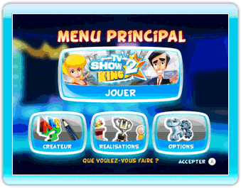
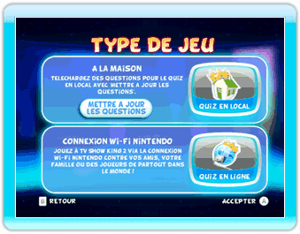
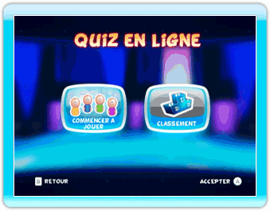
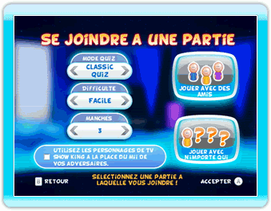
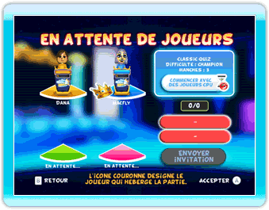

21 |
Connexion Wi-Fi Nintendo |
 |
TV Show King 2 vous permet de jouer en ligne contre vos amis, votre famille ou des joueurs de partout dans le monde !
Une fois connecté à la connexion Wi-Fi Nintendo, il est très facile de faire un quiz en ligne.  Choisissez "Jouer" dans le menu principal.  Sélectionnez "Quiz en ligne" dans le menu Type de jeu.  A partir du menu Quiz en ligne, vous pouvez soit consulter le classement en ligne, soit commencer à jouer. Choisissez "Commencer à jouer" si vous voulez jouer en ligne.  Après avoir choisi un Mii et un pupitre, vous devrez choisir le type de jeu auquel vous voulez jouer. Sélectionnez le mode quiz, la difficulté et le nombre de manches, puis sélectionnez "Jouer avec n'importe qui". C'est aussi dans ce menu que vous pouvez gérer votre liste d'amis en sélectionnant "Jouer avec des amis". Pour plus d'informations sur la liste d'amis et sur tout ce qu'on peut faire dans ce menu, rendez-vous à la section Amis en ligne  Après avoir sélectionné "Jouer avec n'importe qui" ou avoir invité vos amis (voir la section Amis en ligne ci-dessous), vous arriverez sur un écran d'attente. Vous n'avez rien d'autre à faire que d'attendre d'autres joueurs. Vous pouvez également choisir de jouer contre des joueurs CPU. Si vous décidez de modifier les options que vous aviez sélectionnées, il vous suffit d'appuyer sur le bouton B pour revenir à l'écran précédent. Une fois que 2 joueurs (dont vous) se sont joints à la partie, vous avez la possibilité de commencer à jouer. Dans ce cas, les deux joueurs manquants seront remplacés par des joueurs CPU. La partie avec des joueurs CPU ne commence que quand tous les joueurs connectés ont sélectionné l'icône "Commencer avec des joueurs CPU". Un indicateur vous informera des joueurs qui ont sélectionné cette icône.
Pendant que vous choisissez les paramètres du jeu en ligne, vous pouvez aussi sélectionner "Jouer avec des amis" pour entrer un code ami ou gérer votre liste d'amis. Sur cet écran, vous pouvez : A) ENTRER UN NOUVEAU CODE AMI Utilisez le clavier numérique à l'écran pour entrer les 12 chiffres d'un code ami. Vous serez considéré comme ami avec quelqu'un dès que l'autre personne aura elle aussi entré votre code ami dans sa console Wii. B) VOIR VOTRE PROPRE CODE AMI C'est sur cette page que se trouve votre code ami. Si vous souhaitez devenir ami avec quelqu'un, vous devrez lui donner ce code. C) INTERAGIR AVEC VOS AMIS Sur le côté droit de l'écran se trouve la liste de tous vos amis. C'est votre "liste d'amis". Le statut actuel de vos amis Quel que soit le statut de votre ami, vous pouvez sélectionner l'icône avec son nom et le supprimer de votre liste d'amis. Si le statut de votre ami indique qu'il est en attente d'une partie (avec des amis ou des joueurs quelconques), vous pouvez sélectionner l'icône avec son nom et vous joindre à sa partie. Si vous optez pour cela, vous serez directement connecté avec votre ami, sans possibilité de modifier les paramètres de la partie. Enfin, si votre ami est en ligne, vous pouvez sélectionner l'icône avec son nom pour l'inviter à se joindre à votre partie. Vous devez sélectionner tous les amis que vous souhaitez inviter, puis sélectionner l'icône "Envoyer invitation" pour les inviter. Vous serez ensuite automatiquement redirigé vers l'écran d'attente. |
 |
 |
 |